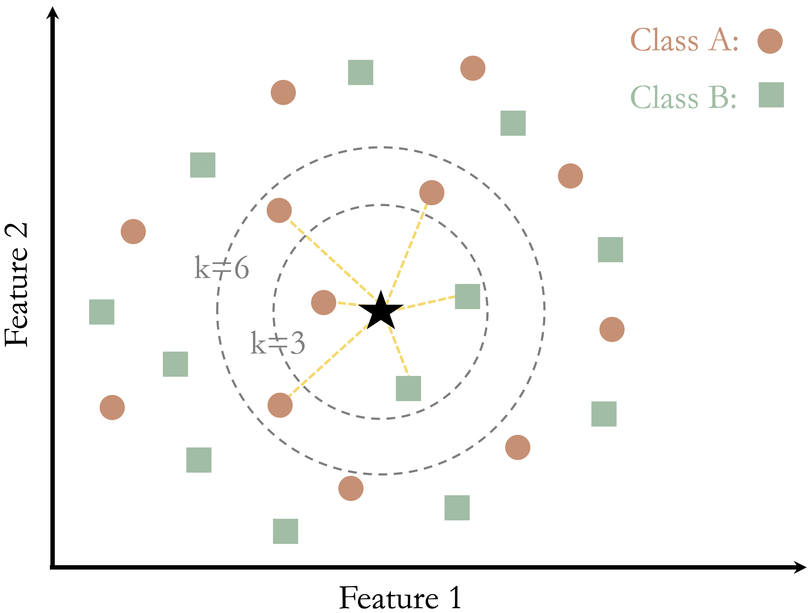
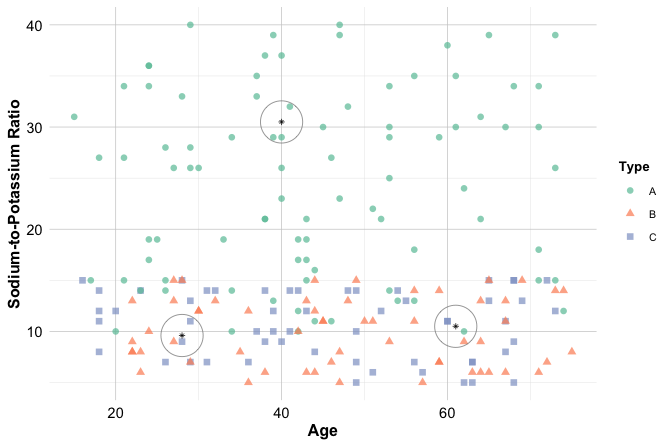
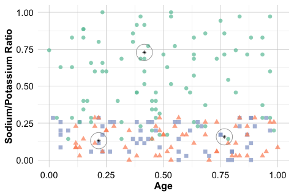
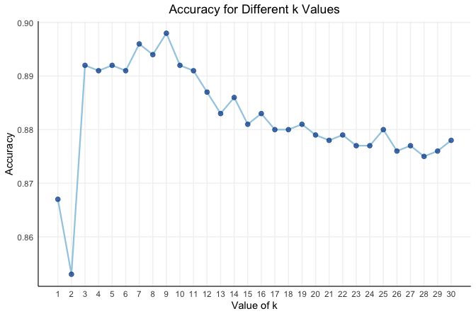

7 Classification Using k-Nearest Neighbors
Classification is a foundational task in machine learning that enables algorithms to assign observations to specific categories based on patterns learned from labeled data. Whether filtering spam emails, detecting fraudulent transactions, or predicting customer churn, classification plays a vital role in many real-world decision systems. This chapter introduces classification as a form of supervised learning, emphasizing accessible and practical methods for those beginning their journey into predictive modeling.
This chapter also marks the start of Step 5: Modeling in the Data Science Workflow (Figure Figure 2.3). Building on earlier chapters, where we cleaned and explored data, developed statistical reasoning, and prepared datasets for modeling, we now turn to the exciting stage of applying machine learning techniques.
What This Chapter Covers
We begin by defining classification and contrasting it with regression, then introduce common applications and categories of classification algorithms. The focus then shifts to one of the most intuitive and interpretable methods: k-Nearest Neighbors (kNN) as a distance-based algorithm that predicts the class of a new observation by examining its closest neighbors in the training set.
To demonstrate the method in action, we apply kNN to the churn dataset, where the goal is to predict whether a customer will discontinue a service. The chapter walks through the full modeling workflow, data preparation, selecting an appropriate value of k, implementing the model in R, and evaluating its predictive performance, offering a step-by-step blueprint for real-world classification problems.
By the end of this chapter, readers will have a clear understanding of how classification models operate, how kNN translates similarity into prediction, and how to apply this method effectively to real-world data.
7.1 Classification
How do email applications filter spam, streaming services recommend the next show, or banks detect fraudulent transactions in real time? These intelligent systems rely on classification, a core task in supervised machine learning that assigns input data to one of several predefined categories.
In classification, models learn from labeled data to predict categorical outcomes. For example, given customer attributes, a model might predict whether a customer is likely to churn. This contrasts with regression, which predicts continuous quantities such as income or house price.
The target variable, often called the class or label, can take different forms. In binary classification, the outcome has two possible categories, such as spam versus not spam. In multiclass classification, the outcome includes more than two categories, such as distinguishing between a pedestrian, a car, or a bicycle in an object recognition task.
Classification underpins a wide array of applications. Email clients detect spam based on message features and sender behavior. Financial systems flag anomalous transactions to prevent fraud. Businesses use churn models to identify customers at risk of leaving. In healthcare, models assist in diagnosing diseases from clinical data. Autonomous vehicles rely on object recognition to navigate safely. Recommendation systems apply classification logic to tailor content to users.
These examples illustrate how classification enables intelligent systems to translate structured inputs into meaningful, actionable predictions. As digital data becomes more pervasive, classification remains a foundational technique for building effective and reliable predictive models.
How Classification Works
Classification typically involves two main phases:
Training phase: The model learns patterns from a labeled dataset, where each observation contains input features along with a known class label. For example, a fraud detection system might learn that high-value transactions originating from unfamiliar locations are often fraudulent.
Prediction phase: Once trained, the model is used to classify new, unseen observations. Given the features of a new transaction, the model predicts whether it is fraudulent.
A well-performing classification model captures meaningful patterns in the data rather than simply memorizing the training set. Its value lies in the ability to generalize, that is, to make accurate predictions on new data not encountered during training. This ability to generalize is a defining characteristic of all supervised learning methods.
Classification Algorithms and the Role of kNN
A wide range of algorithms can be used for classification, each with its own strengths depending on the nature of the data and the modeling goals. Some commonly used methods include:
k-Nearest Neighbors: A simple, distance-based algorithm that assigns labels based on the nearest neighbors. It is the focus of this chapter.
Naive Bayes: A probabilistic method well-suited to text classification tasks such as spam detection (see Chapter 9).
Logistic Regression: A widely used model for binary outcomes, known for its interpretability (see Chapter 10).
Decision Trees and Random Forests: Flexible models that can capture complex, nonlinear relationships (see Chapter 11).
Neural Networks: High-capacity algorithms effective for high-dimensional or unstructured data, including images and text (see Chapter 12).
Choosing an appropriate algorithm depends on several factors, including dataset size, the types of features, the need for interpretability, and computational constraints. For small to medium-sized datasets or when transparency is a priority, simpler models such as kNN or Decision Trees may be suitable. For more complex tasks involving large datasets or unstructured inputs, Neural Networks may offer better predictive performance.
To illustrate, consider the bank dataset, where the task is to predict whether a customer will subscribe to a term deposit (deposit = yes). Predictor variables such as age, education, and marital status can be used to build a classification model. Such a model can support targeted marketing by identifying customers more likely to respond positively.
Among these algorithms, kNN stands out for its ease of use and intuitive decision-making process. Because it makes minimal assumptions about the underlying data, kNN is often used as a baseline model, helping to gauge how challenging a classification problem is before considering more complex approaches. In the sections that follow, we explore how the kNN algorithm works, how to implement it in R, and how to apply it to a real-world classification task using the churn dataset.
7.2 How k-Nearest Neighbors Works
Imagine making a decision by consulting a few trusted peers who have faced similar situations. The kNN algorithm works in much the same way: it predicts outcomes based on the most similar observations from previously seen data. This intuitive, experience-based approach makes kNN one of the most accessible methods in classification.
Unlike many algorithms that involve an explicit training phase, kNN follows a lazy learning strategy. It stores the entire training dataset and postpones computation until a prediction is needed. When a new observation arrives, the algorithm calculates its distance from all training points, identifies the k closest neighbors, and assigns the most common class among them. The choice of k, the number of neighbors used, is crucial: small values make the model sensitive to local patterns, while larger values promote broader generalization. Because kNN defers all computation until prediction, it avoids upfront model fitting but shifts the computational burden to the prediction phase.
How Does kNN Classify a New Observation?
When classifying a new observation, the kNN algorithm first computes its distance to all data points in the training set, typically using the Euclidean distance. It then identifies the k nearest neighbors and assigns the most frequent class label among them as the predicted outcome.
Figure 7.1 illustrates this idea using a toy dataset with two classes: Class A (orange circles) and Class B (blue squares). A new data point, shown as a dark star, must be assigned to one of the two classes. The classification result depends on the chosen value of k:
When \(k = 3\), the three closest neighbors include two blue squares and one red circle. Since the majority class is Class B, the new point is labeled accordingly.
When \(k = 6\), the nearest neighbors include four red circles and two blue squares, resulting in a prediction of Class A.
These examples demonstrate how the choice of k directly affects the classification result. A smaller k makes the model more sensitive to local variation and potentially noisy observations, leading to overfitting. In contrast, a larger k smooths the decision boundaries by incorporating more neighbors but may overlook meaningful local structure. Choosing the right value of k is therefore essential for balancing variance and bias, a topic we revisit later in this chapter.
Strengths and Limitations of kNN
The kNN algorithm is valued for its simplicity and transparent decision-making process, making it a common starting point in classification tasks. It requires no explicit model training; instead, it stores the training data and performs computations only at prediction time. This approach makes kNN easy to implement and interpret, particularly effective for small datasets with well-separated class boundaries.
However, this simplicity comes with important trade-offs. The algorithm is sensitive to irrelevant or noisy features, which can distort distance calculations and degrade predictive performance. Moreover, since kNN calculates distances to all training examples at prediction time, it can become computationally expensive as the dataset grows.
Another crucial consideration is the choice of k, which directly affects model behavior. A small k may lead to overfitting and heightened sensitivity to noise, whereas a large k may oversmooth the decision boundary, obscuring meaningful patterns. As we discuss later in the chapter, selecting an appropriate value of k is key to balancing variance and bias.
Finally, the effectiveness of kNN often hinges on proper data preprocessing. Feature selection, scaling, and outlier handling all play a significant role in ensuring that distance computations reflect meaningful structure in the data, topics we address in the next sections.
7.3 A Simple Example of kNN Classification
To illustrate how kNN operates in practice, consider a simplified classification example involving drug prescriptions. We use a synthetic dataset of 200 patients that records each patient’s age, sodium-to-potassium (Na/K) ratio in the blood, and the prescribed drug type. Although artificially generated, the dataset mimics patterns commonly found in real clinical data. Details of the data generation process are provided in Section 1.20. The dataset is available in the liver package under the name drug. Figure 7.2 visualizes the distribution of patient records, where each point represents a patient. The dataset includes three drug types—Drug A, Drug B, and Drug C—indicated by different colors and shapes.
Suppose three new patients arrive at the clinic, and we need to determine which drug is most suitable for them based on their age and sodium-to-potassium ratio. Patient 1 is 40 years old with a Na/K ratio of 30.5. Patient 2 is 28 years old with a ratio of 9.6, and Patient 3 is 61 years old with a ratio of 10.5. These patients are shown as dark stars in Figure 7.2, with their three nearest neighbors highlighted in gray.

For new Patient 1, located deep within a cluster of green-circle points (Drug A), the classification is straightforward. All nearest neighbors belong to Drug A, making the prediction clear and confident.
For new Patient 2, the outcome depends on the chosen value of k, as shown in the left panel of Figure 7.3. When \(k = 1\), the nearest neighbor is a blue square, so the predicted class is Drug C. With \(k = 2\), there is a tie between Drug B and Drug C, leaving no clear majority. At \(k = 3\), two of the three nearest neighbors are blue squares, so the prediction remains Drug C. What happens if we increase k even further? The model begins to smooth the decision boundary, reducing noise sensitivity but potentially missing finer local details.
For new Patient 3, the classification is more uncertain, as seen in the right panel of Figure 7.3. With \(k = 1\) or \(k = 2\), the patient lies nearly equidistant from both red and blue points, leading to an unstable classification. At \(k = 3\), the three nearest neighbors each represent a different class, making the prediction entirely ambiguous. What would happen if the patient’s sodium-to-potassium ratio were slightly higher or lower? Even a small shift could move this patient closer to one cluster or another, changing the predicted class entirely. This highlights a key limitation of kNN: when observations fall near class boundaries, prediction confidence decreases sharply.

This example highlights key considerations for using kNN effectively. The choice of k strongly influences the decision boundary: smaller values emphasize local variation, while larger values yield smoother classifications. The distance metric determines how similarity is assessed, and proper feature scaling ensures that all variables contribute meaningfully. Together, these design choices play a crucial role in the success of kNN in practice. In the next sections, we explain how kNN measures similarity and explore how to choose the optimal value of k.
7.4 How Does kNN Measure Similarity?
Suppose you are a physician comparing two patients based on age and sodium-to-potassium (Na/K) ratio. One patient is 40 years old with a Na/K ratio of 30.5, and the other is 28 years old with a ratio of 9.6. Which of these patients is more similar to a new case you are evaluating?
In the kNN algorithm, classifying a new observation depends on identifying the most similar records in the training set. While similarity may seem intuitive, machine learning requires a precise definition. Specifically, similarity is quantified using a distance metric, which determines how close two observations are in a multidimensional feature space. These distances govern which records are chosen as neighbors and, ultimately, how a new observation is classified.
In this medical scenario, similarity is measured by comparing numerical features such as age and lab values. The smaller the computed distance between two patients, the more similar they are assumed to be, and the more influence they have on classification. Since kNN relies on the assumption that nearby points tend to share the same class label, choosing an appropriate distance metric is essential for accurate predictions.
7.4.1 Euclidean Distance
A widely used measure of similarity in kNN is Euclidean distance, which corresponds to the straight-line, or “as-the-crow-flies,” distance between two points. It is intuitive, easy to compute, and well-suited to numerical data with comparable scales.
Mathematically, the Euclidean distance between two points \(x\) and \(y\) in \(n\)-dimensional space is given by:
\[ \text{dist}(x, y) = \sqrt{(x_1 - y_1)^2 + (x_2 - y_2)^2 + \ldots + (x_n - y_n)^2}, \]
where \(x = (x_1, x_2, \ldots, x_n)\) and \(y = (y_1, y_2, \ldots, y_n)\) are the feature vectors.
For example, suppose we want to compute the Euclidean distance between two new patients from the previous section, using their age and sodium-to-potassium (Na/K) ratio. Patient 1 is 40 years old with a Na/K ratio of 30.5, and Patient 2 is 28 years old with a Na/K ratio of 9.6. The Euclidean distance between these two patients is visualized in Figure 7.4 in a two-dimensional feature space, where each axis represents one of the features (age and Na/K ratio). The line connecting Patient 1 \((40, 30.5)\) and Patient 2 \((28, 9.6)\) represents their Euclidean distance:
\[ \text{dist}(x, y) = \sqrt{(40 - 28)^2 + (30.5 - 9.6)^2} = \sqrt{144 + 436.81} = 24.11 \]

This value quantifies how dissimilar the patients are in the two-dimensional feature space, and it plays a key role in determining how the new patient would be classified by kNN.
Although other distance metrics exist, such as Manhattan distance, Hamming distance, or cosine similarity, Euclidean distance is the most commonly used in practice, especially when working with numerical features. Its geometric interpretation is intuitive and it works well when variables are measured on similar scales. In more specialized contexts, other distance metrics may be more appropriate depending on the structure of the data or the application domain. Readers interested in alternative metrics can explore resources such as the proxy package in R or consult advanced machine learning texts.
In the next section, we will examine how preprocessing steps like feature scaling ensure that Euclidean distance yields meaningful and balanced comparisons across features.
7.5 Data Preparation for the kNN Algorithm
The performance of the kNN algorithm is highly sensitive to how the data is preprocessed. Because kNN relies on distance calculations to assess similarity between observations, careful preparation of the feature space is essential. Two key steps, encoding categorical variables and feature scaling, ensure that both categorical and numerical features are properly represented in these computations.
These tasks fall under the Data Preparation phase of the Data Science Workflow introduced in Chapter 3 (see Figure 2.3), and they also connect to the broader Data Setup to Model stage discussed in Chapter 6. Regardless of where they appear in the workflow, these steps are crucial for ensuring that kNN’s similarity measures are both consistent and reliable.
To make this concrete, imagine you are working with patient data that includes age, sodium-to-potassium (Na/K) ratio, marital status, and education level. While age and Na/K ratio are numeric, marital status and education are categorical. To prepare these features for use in a distance-based model, we must convert them into numerical form in a way that preserves their original meaning.
In most tabular datasets (such as the bank and churn datasets introduced earlier), features include a mix of categorical and numerical variables. A common and recommended approach is to begin by encoding the categorical features into numeric format and then scaling all numeric features. This sequence ensures that distance calculations are performed on a unified numerical scale, without introducing artificial distortions. In the next subsection, we begin with the challenge of encoding categorical variables.
7.5.1 Encoding Categorical Variables for kNN
Categorical features, such as marital status or education level, are common in real-world datasets. But before they can be used in kNN, they must be transformed into numerical form in a way that aligns with how distances are computed. Since kNN cannot interpret text labels or non-numeric values directly, all categorical variables must be encoded. The appropriate encoding strategy depends on whether the variable is binary, nominal, or ordinal.
These techniques were introduced in Chapter 3, with general guidance in Section 3.13, ordinal handling in Section 3.14, and one-hot encoding in Section 3.15.
Binary and Nominal Variables: One-Hot Encoding
For binary variables (such as yes/no) and nominal variables (such as marital status with categories single, married, divorced), the recommended approach is one-hot encoding. This technique creates one binary column per category, omitting one to avoid redundancy, a practice that avoids the so-called dummy variable trap, where perfectly collinear columns interfere with computation.
For example, the marital variable in the bank dataset can be one-hot encoded using the one.hot() function from the liver package:
data(bank)
# One-hot encode the "marital" variable from the bank dataset
bank_encoded <- one.hot(bank, cols = c("marital"), dropCols = FALSE)
str(bank_encoded)
'data.frame': 4521 obs. of 20 variables:
$ age : int 30 33 35 30 59 35 36 39 41 43 ...
$ job : Factor w/ 12 levels "admin.","blue-collar",..: 11 8 5 5 2 5 7 10 3 8 ...
$ marital : Factor w/ 3 levels "divorced","married",..: 2 2 3 2 2 3 2 2 2 2 ...
$ marital_divorced: int 0 0 0 0 0 0 0 0 0 0 ...
$ marital_married : int 1 1 0 1 1 0 1 1 1 1 ...
$ marital_single : int 0 0 1 0 0 1 0 0 0 0 ...
$ education : Factor w/ 4 levels "primary","secondary",..: 1 2 3 3 2 3 3 2 3 1 ...
$ default : Factor w/ 2 levels "no","yes": 1 1 1 1 1 1 1 1 1 1 ...
$ balance : int 1787 4789 1350 1476 0 747 307 147 221 -88 ...
$ housing : Factor w/ 2 levels "no","yes": 1 2 2 2 2 1 2 2 2 2 ...
$ loan : Factor w/ 2 levels "no","yes": 1 2 1 2 1 1 1 1 1 2 ...
$ contact : Factor w/ 3 levels "cellular","telephone",..: 1 1 1 3 3 1 1 1 3 1 ...
$ day : int 19 11 16 3 5 23 14 6 14 17 ...
$ month : Factor w/ 12 levels "apr","aug","dec",..: 11 9 1 7 9 4 9 9 9 1 ...
$ duration : int 79 220 185 199 226 141 341 151 57 313 ...
$ campaign : int 1 1 1 4 1 2 1 2 2 1 ...
$ pdays : int -1 339 330 -1 -1 176 330 -1 -1 147 ...
$ previous : int 0 4 1 0 0 3 2 0 0 2 ...
$ poutcome : Factor w/ 4 levels "failure","other",..: 4 1 1 4 4 1 2 4 4 1 ...
$ deposit : Factor w/ 2 levels "no","yes": 1 1 1 1 1 1 1 1 1 1 ...This transformation results in three new binary columns: marital_single, marital_married, and marital_divorced. Each column indicates whether the corresponding category is present (1) or absent (0) for each observation. This approach ensures that categories are treated as equidistant in the feature space, which is appropriate for variables with no inherent order.
Ordinal Variables: Numeric Encoding
For ordinal variables with a meaningful ranking (such as low, medium, high), it is preferable to assign numeric values that reflect their order (e.g., low = 1, medium = 2, high = 3). This preserves the ordinal relationship in the distance calculations, which would otherwise be ignored by one-hot encoding.
For instance, consider the education variable in the bank dataset, which has levels primary, secondary, and tertiary. We can convert this variable to numeric scores as follows:
This numeric encoding preserves the order of education levels and allows the kNN model to treat higher education levels as more distant from lower ones, reflecting real-world meaning.
In summary, binary and nominal variables should be transformed using one-hot encoding to ensure that each category contributes fairly and independently to the distance computation. For ordinal variables, assigning numeric values that reflect their inherent order allows kNN to capture meaningful relationships. By contrast, treating unordered categories as numeric, such as assigning red = 1, blue = 2, green = 3, can mislead the model by introducing artificial structure. Careful attention to encoding choices helps preserve the integrity of similarity calculations and improves classification accuracy.
7.5.2 Scaling Features for Fair Distance Computation
Once categorical variables have been encoded, all numeric features, both original and derived, should be scaled to ensure they contribute fairly to similarity calculations. Even after proper encoding, features may vary substantially in scale. For example, age might range from 20 to 70, while income could vary from 20,000 to 150,000. Without appropriate scaling, variables with larger ranges may disproportionately influence the distance calculation, resulting in biased neighbor selection.
Two widely used methods address this issue: min-max scaling and z-score standardization. These approaches were introduced in Section 3.10.
Min-max scaling transforms each feature to a fixed range, typically \([0, 1]\), using the formula:
\[ x_{\text{scaled}} = \frac{x - \min(x)}{\max(x) - \min(x)}, \]
where \(\min(x)\) and \(\max(x)\) are calculated from the training data. This method ensures that all features contribute on the same numerical scale.
Z-score standardization rescales features so that they have a mean of 0 and a standard deviation of 1:
\[ x_{\text{scaled}} = \frac{x - \text{mean}(x)}{\text{sd}(x)}. \]
This method is more appropriate when features contain outliers or have differing units or distributions.
Min-max scaling is generally appropriate when feature values are bounded and preserving relative distances is important. Z-score standardization is preferable when features are measured on different units or contain outliers, as it reduces the influence of extreme values.
7.5.3 Preventing Data Leakage during Scaling
Scaling should be performed after splitting the dataset into training and test sets. This prevents data leakage, a common pitfall in predictive modeling where information from the test set inadvertently influences the model during training. Specifically, parameters such as the mean, standard deviation, minimum, and maximum must be computed only from the training data, and then applied to scale both the training and test sets.
The comparison in Figure 7.5 visualizes the importance of applying scaling correctly. The middle panel shows proper scaling using training-derived parameters; the right panel shows the distortion caused by scaling the test data independently.
To illustrate, consider the drug classification task from earlier. Suppose age and Na/K ratio are the two predictors. The following code demonstrates both correct and incorrect approaches to scaling, using the minmax() function from the liver package:
library(liver)
# Correct scaling: Apply train-derived parameters to test data
train_scaled = minmax(train_set, col = c("age", "ratio"))
test_scaled = minmax(test_set, col = c("age", "ratio"),
min = c(min(train_set$age), min(train_set$ratio)),
max = c(max(train_set$age), max(train_set$ratio))
)
# Incorrect scaling: Apply separate scaling to test set
train_scaled_wrongly = minmax(train_set, col = c("age", "ratio"))
test_scaled_wrongly = minmax(test_set , col = c("age", "ratio"))


Note. Scaling parameters should always be derived from the training data and then applied consistently to both the training and test sets. Failing to do so can result in incompatible feature spaces, leading the kNN algorithm to identify misleading neighbors and produce unreliable predictions.
With similarity measurement and data preparation steps now complete, the next task is to determine an appropriate value of \(k\). The following section examines how this crucial hyperparameter influences the behavior and performance of the kNN algorithm.
7.6 Choosing the Right Value of k in kNN
Imagine you are new to a city and looking for a good coffee shop. If you ask just one person, you might get a recommendation based on their personal taste, which may differ from yours. If you ask too many people, you could be overwhelmed by conflicting opinions or suggestions that average out to a generic option. The sweet spot is asking a few individuals whose preferences align with your own. Similarly, in the kNN algorithm, selecting an appropriate number of neighbors (\(k\)) requires balancing specificity and generalization.
The parameter k, which determines how many nearest neighbors are considered during classification, plays a central role in shaping model performance. There is no universally optimal value for k; the best choice depends on the structure of the dataset and the nature of the classification task. Selecting k involves navigating the trade-off between overfitting and underfitting.
When k is too small, such as \(k = 1\), the model becomes overly sensitive to individual training points. Each new observation is classified based solely on its nearest neighbor, making the model highly reactive to noise and outliers. This often leads to overfitting, where the model performs well on the training data but generalizes poorly to new cases. A small cluster of mislabeled examples, for instance, could disproportionately influence the results.
As k increases, the algorithm includes more neighbors in its classification decisions, smoothing the decision boundary and reducing the influence of noisy observations. However, when k becomes too large, the model may begin to overlook meaningful patterns, leading to underfitting. If k approaches the size of the training set, predictions may default to the majority class label.
To determine a suitable value of k, it is common to evaluate a range of options using a validation set or cross-validation. Performance metrics such as accuracy, precision, recall, and the F1-score can guide this choice. These metrics are discussed in detail in Chapter 8. For simplicity, we focus here on accuracy (also called the success rate), which measures the proportion of correct predictions.
As an example, Figure 7.6 presents the accuracy of the kNN classifier for k values ranging from 1 to 30, generated with the kNN.plot() function from the liver package in R. Accuracy fluctuates as k increases, with the best performance achieved at \(k = 9\), where the algorithm reaches its highest accuracy.
Choosing k is ultimately an empirical process informed by validation and domain knowledge. There is no universal rule, but careful experimentation helps identify a value that generalizes well for the problem at hand. A detailed case study in the following section revisits this example and walks through the complete modeling process.
7.7 Case Study: Predicting Customer Churn with kNN
In this case study, we demonstrate how to apply the kNN algorithm to a real-world classification problem. Using the churn dataset from the liver package in R, we follow the complete modeling workflow, from data preparation to model training and evaluation. This provides a practical context to reinforce the concepts introduced earlier in the chapter.
The churn dataset captures customer behavior and service usage across multiple dimensions, including account length, service plans, call metrics, and customer service interactions. The modeling task is to predict whether a customer has churned (yes) or not (no) based on these features.
Readers unfamiliar with the dataset are encouraged to review the exploratory analysis presented in Section 4.3, which provides important context and preliminary findings. We begin here by inspecting the dataset structure:
data(churn)
str(churn)
'data.frame': 5000 obs. of 20 variables:
$ state : Factor w/ 51 levels "AK","AL","AR",..: 17 36 32 36 37 2 20 25 19 50 ...
$ area.code : Factor w/ 3 levels "area_code_408",..: 2 2 2 1 2 3 3 2 1 2 ...
$ account.length: int 128 107 137 84 75 118 121 147 117 141 ...
$ voice.plan : Factor w/ 2 levels "yes","no": 1 1 2 2 2 2 1 2 2 1 ...
$ voice.messages: int 25 26 0 0 0 0 24 0 0 37 ...
$ intl.plan : Factor w/ 2 levels "yes","no": 2 2 2 1 1 1 2 1 2 1 ...
$ intl.mins : num 10 13.7 12.2 6.6 10.1 6.3 7.5 7.1 8.7 11.2 ...
$ intl.calls : int 3 3 5 7 3 6 7 6 4 5 ...
$ intl.charge : num 2.7 3.7 3.29 1.78 2.73 1.7 2.03 1.92 2.35 3.02 ...
$ day.mins : num 265 162 243 299 167 ...
$ day.calls : int 110 123 114 71 113 98 88 79 97 84 ...
$ day.charge : num 45.1 27.5 41.4 50.9 28.3 ...
$ eve.mins : num 197.4 195.5 121.2 61.9 148.3 ...
$ eve.calls : int 99 103 110 88 122 101 108 94 80 111 ...
$ eve.charge : num 16.78 16.62 10.3 5.26 12.61 ...
$ night.mins : num 245 254 163 197 187 ...
$ night.calls : int 91 103 104 89 121 118 118 96 90 97 ...
$ night.charge : num 11.01 11.45 7.32 8.86 8.41 ...
$ customer.calls: int 1 1 0 2 3 0 3 0 1 0 ...
$ churn : Factor w/ 2 levels "yes","no": 2 2 2 2 2 2 2 2 2 2 ...The dataset is an R data frame containing 5000 observations and 19 predictor variables, along with a binary outcome variable, churn.
Based on the earlier exploratory analysis and domain relevance, we focus on the following features for building the kNN model:
account.length, voice.plan, voice.messages, intl.plan, intl.mins, intl.calls, day.mins, day.calls, eve.mins, eve.calls, night.mins, night.calls, and customer.calls.
In the remainder of this section, we proceed step by step: partitioning and preprocessing the data, selecting an appropriate value of k, fitting the kNN model, making predictions, and evaluating classification performance.
7.7.1 Partitioning and Preprocessing the Data for kNN
To assess how well the kNN model generalizes to new observations, we begin by splitting the dataset into training and test sets. This separation provides an unbiased estimate of predictive accuracy by evaluating model performance on previously unseen data.
Because the churn dataset is already cleaned and free of missing values (see Chapter 3), we proceed directly to data partitioning using the partition() function from the liver package. This function divides the data into an 80% training set and a 20% test set:
The partition() function preserves the class distribution of the target variable (churn) across both sets, ensuring that the test set remains representative of the population. This stratified sampling approach is especially important for classification tasks with imbalanced outcomes. For additional background on data partitioning and validation strategies, refer to Section 6.4.
Encoding Categorical Features for kNN
Because the kNN algorithm requires numerical inputs and relies on distance calculations, categorical features must be converted into numeric format. In the churn dataset, voice.plan and intl.plan are binary categorical variables that require transformation.
The one.hot() function from the liver package automates this process by generating binary indicator features:
categorical_vars = c("voice.plan", "intl.plan")
train_onehot = one.hot(train_set, cols = categorical_vars)
test_onehot = one.hot(test_set, cols = categorical_vars)
str(test_onehot)
'data.frame': 1000 obs. of 22 variables:
$ state : Factor w/ 51 levels "AK","AL","AR",..: 37 16 10 6 41 27 1 32 21 16 ...
$ area.code : Factor w/ 3 levels "area_code_408",..: 2 2 2 1 2 1 1 1 1 1 ...
$ account.length: int 75 65 147 77 111 54 36 149 135 60 ...
$ voice.plan_yes: int 0 0 0 0 0 0 1 0 1 0 ...
$ voice.plan_no : int 1 1 1 1 1 1 0 1 0 1 ...
$ voice.messages: int 0 0 0 0 0 0 30 0 41 0 ...
$ intl.plan_yes : int 1 0 0 0 0 0 0 0 1 0 ...
$ intl.plan_no : int 0 1 1 1 1 1 1 1 0 1 ...
$ intl.mins : num 10.1 12.7 10.6 5.7 7.7 14.7 14.5 11.1 14.6 6.8 ...
$ intl.calls : int 3 6 4 6 6 4 6 9 15 3 ...
$ intl.charge : num 2.73 3.43 2.86 1.54 2.08 3.97 3.92 3 3.94 1.84 ...
$ day.mins : num 166.7 129.1 155.1 62.4 110.4 ...
$ day.calls : int 113 137 117 89 103 73 128 94 85 57 ...
$ day.charge : num 28.3 21.9 26.4 10.6 18.8 ...
$ eve.mins : num 148 228 240 170 137 ...
$ eve.calls : int 122 83 93 121 102 100 80 92 107 115 ...
$ eve.charge : num 12.6 19.4 20.4 14.4 11.7 ...
$ night.mins : num 187 209 209 210 190 ...
$ night.calls : int 121 111 133 64 105 68 109 108 78 129 ...
$ night.charge : num 8.41 9.4 9.4 9.43 8.53 ...
$ customer.calls: int 3 4 0 5 2 3 0 1 0 1 ...
$ churn : Factor w/ 2 levels "yes","no": 2 1 2 1 2 2 2 2 1 2 ...For each binary variable, the function creates two columns (e.g., voice.plan_yes and voice.plan_no). Since the presence of one category implies the absence of the other, only one indicator variable (e.g., voice.plan_yes) is retained. This avoids redundancy and maintains interpretability while ensuring compatibility with distance-based modeling.
Feature Scaling for kNN
To ensure that all numerical features contribute equally to distance calculations, we apply min-max scaling. This technique rescales each feature to the \([0,1]\) range using the minimum and maximum values calculated from the training set. The same scaling parameters are then applied to the test set to prevent data leakage:
numeric_vars = c("account.length", "voice.messages", "intl.mins",
"intl.calls", "day.mins", "day.calls", "eve.mins",
"eve.calls", "night.mins", "night.calls",
"customer.calls")
min_train = sapply(train_set[, numeric_vars], min) # Compute column-wise minimums
max_train = sapply(train_set[, numeric_vars], max) # Compute column-wise maximums
train_scaled = minmax(train_onehot, col = numeric_vars, min = min_train, max = max_train)
test_scaled = minmax(test_onehot, col = numeric_vars, min = min_train, max = max_train)Here, the sapply() function is used to compute the column-wise minimum and maximum values across the selected numeric variables in the training set. These values define the scaling range. The minmax() function from the liver package then applies min-max scaling to both the training and test sets, using the training-set values as reference.
This step ensures that all features are on a comparable scale, preventing those with larger ranges from disproportionately influencing the kNN distance calculations. For a more detailed discussion of scaling methods and best practices, see Section 3.10 and the preparation overview in Section 7.5. Now that the data are properly encoded and scaled, we are ready to choose the optimal number of neighbors (k) for the kNN algorithm.
7.7.2 Finding the Best Value for (k)
The number of neighbors, k, is a key hyperparameter in the kNN algorithm. Choosing too small a k can make the model overly sensitive to noise in the data, while a very large k can oversmooth the decision boundary, potentially missing important local patterns.
In R, there are several ways to choose the optimal value of k. A common approach is to evaluate the classification accuracy of the kNN algorithm across a range of values (e.g., from 1 to 30), and then select the k that yields the highest accuracy. This can be implemented manually using a for loop and tracking performance for each k.
To simplify this process, the liver package provides the kNN.plot() function, which automates this task. It computes accuracy across a specified range of k values and produces a visual summary of the results, making it easier to identify the best-performing k.
Before running the function, we define a formula object that specifies the relationship between the target variable (churn) and the predictor variables. The predictors include all scaled numerical features as well as the binary indicators generated through one-hot encoding, namely intl.plan_yes and voice.plan_yes:
formula = churn ~ voice.plan_yes + intl.plan_yes + account.length +
voice.messages + intl.mins + intl.calls +
day.mins + day.calls + eve.mins + eve.calls +
night.mins + night.calls + customer.callsWe now apply the kNN.plot() function:

The arguments to kNN.plot() play distinct roles in shaping the evaluation. The train and test inputs specify the scaled datasets used for training and testing, respectively, ensuring that distance calculations are made on comparable feature scales. The k.max = 30 argument defines the maximum number of neighbors to evaluate, allowing us to observe model behavior across a range of values. Setting reference = "yes" indicates that the "yes" class represents the positive outcome of interest, i.e., customer churn. Finally, set.seed = 42 ensures reproducibility by fixing the random seed for any internal random processes.
The resulting plot shows how model accuracy varies with k. In this case, the highest accuracy is achieved when \(k = 9\), suggesting that this value offers a good balance between capturing local structure and maintaining generalization. With the optimal value of \(k\) identified, we are now ready to apply the kNN algorithm to classify new customer records in the test set.
7.7.3 Applying the kNN Classifier
With the optimal value \(k = 9\) identified, we now apply the kNN algorithm to classify customer churn in the test set. This step brings together the work from the previous sections, data preparation, feature encoding, scaling, and hyperparameter tuning.
Unlike many machine learning algorithms, kNN does not build an explicit predictive model during training. Instead, it retains the training data and performs classification on demand by computing distances to determine the closest training examples.
In R, we use the kNN() function from the liver package to apply the k-Nearest Neighbors algorithm. This function provides a formula-based interface, consistent with other modeling functions in R, making the syntax more readable and the modeling process more transparent. An alternative is the knn() function from the class package, which requires manually specifying input matrices and class labels. While effective, this approach is less intuitive for beginners and is not used in this book:
kNN_predict = kNN(formula = formula, train = train_scaled, test = test_scaled, k = 9)In this command, formula defines the relationship between the response variable (churn) and the predictors. The train and test arguments specify the scaled datasets prepared in earlier steps. The parameter k = 9 sets the number of nearest neighbors to use, as determined in the tuning step.
The kNN() function classifies each test observation by computing its distance to all records in the training set and assigning the majority class among the nine nearest neighbors.
7.7.4 Evaluating Model Performance of the kNN Model
With predictions in hand, the final step is to assess how well the kNN model performs. A fundamental and intuitive evaluation tool is the confusion matrix, which summarizes the correspondence between predicted and actual class labels in the test set.
We use the conf.mat.plot() function from the liver package to compute and visualize this matrix. The argument reference = "yes" specifies that the positive class refers to customers who have churned:
conf.mat.plot(kNN_predict, test_labels, reference = "yes")
The resulting matrix displays the number of true positives, true negatives, false positives, and false negatives. In this example, the model correctly classified 898 observations and misclassified 102.
While the confusion matrix provides a useful snapshot of model performance, it does not capture all aspects of classification quality. In Chapter 8, we introduce additional evaluation metrics, including accuracy, precision, recall, and F1-score, that offer a more nuanced assessment.
Summary of the kNN Case Study
This case study has demonstrated the complete modeling pipeline for applying kNN: starting with data partitioning, followed by preprocessing (including encoding and scaling), tuning the hyperparameter k, applying the classifier, and evaluating the results. Each stage plays a critical role in ensuring that the final predictions are both accurate and interpretable.
While the confusion matrix provides an initial evaluation of model performance, a more comprehensive assessment requires additional metrics such as accuracy, precision, recall, and F1-score. These will be explored in the next chapter (Chapter 8), which introduces tools and techniques for evaluating and comparing machine learning models more rigorously.
7.8 Chapter Summary and Takeaways
This chapter introduced the kNN algorithm, a simple yet effective method for classification. We began by revisiting the concept of classification and its practical applications, distinguishing between binary and multi-class problems. We then examined how kNN classifies observations by identifying their nearest neighbors using distance metrics.
To ensure meaningful distance comparisons, we discussed essential preprocessing steps such as one-hot encoding of categorical variables and feature scaling. We also explored how to select the optimal number of neighbors (\(k\)), emphasizing the trade-off between overfitting and underfitting. These concepts were demonstrated through a complete case study using the liver package in R and the churn dataset, highlighting the importance of thoughtful data preparation and parameter tuning.
The simplicity and interpretability of kNN make it a valuable introductory model. However, its limitations, including sensitivity to noise, reliance on proper scaling, and inefficiency with large datasets, can reduce its practicality for large-scale applications. Despite these drawbacks, kNN remains a strong baseline for classification tasks and a useful reference point for model comparison.
While our focus has been on classification, the kNN algorithm also supports regression. In kNN regression, the target variable is numeric, and predictions are based on averaging the outcomes of the k nearest neighbors. This variant follows the same core principles and offers a non-parametric alternative to traditional regression models.
Another important use case is imputation of missing values, where kNN fills in missing entries by identifying similar observations and using their values (via majority vote or averaging). This method preserves local structure in the data and often outperforms basic imputation techniques such as mean substitution, especially when the extent of missingness is moderate.
In the chapters that follow, we turn to more advanced classification methods. We begin with Naive Bayes (Chapter 9), followed by Logistic Regression (Chapter 10), and Decision Trees (Chapter 11). These models address many of kNN’s limitations and provide more scalable and robust tools for real-world predictive tasks.
7.9 Exercises
The following exercises reinforce key ideas introduced in this chapter. Begin with conceptual questions to test your understanding, continue with hands-on modeling tasks using the bank dataset, and conclude with reflective prompts and real-world considerations for applying kNN.
Conceptual Questions
Explain the fundamental difference between classification and regression. Provide an example of each.
What are the key steps in applying the kNN algorithm?
Why is the choice of \(k\) important in kNN, and what happens when \(k\) is too small or too large?
Describe the role of distance metrics in kNN classification. Why is Euclidean distance commonly used?
What are the limitations of kNN compared to other classification algorithms?
How does feature scaling impact the performance of kNN? Why is it necessary?
How is one-hot encoding used in kNN, and why is it necessary for categorical variables?
How does kNN handle missing values? What strategies can be used to deal with missing data?
Explain the difference between lazy learning (such as kNN) and eager learning (such as decision trees or logistic regression). Give one advantage of each.
Why is kNN considered a non-parametric algorithm? What advantages and disadvantages does this bring?
Hands-On Practice: Applying kNN to the bank Dataset
The following tasks apply the kNN algorithm to the bank dataset from the liver package. This dataset includes customer demographics and banking history, with the goal of predicting whether a customer subscribed to a term deposit. These exercises follow the same modeling steps as the churn case study and offer opportunities to deepen your practical understanding.
To begin, load the necessary package and dataset:
library(liver)
# Load the dataset
data(bank)
# View the structure of the dataset
str(bank)
'data.frame': 4521 obs. of 17 variables:
$ age : int 30 33 35 30 59 35 36 39 41 43 ...
$ job : Factor w/ 12 levels "admin.","blue-collar",..: 11 8 5 5 2 5 7 10 3 8 ...
$ marital : Factor w/ 3 levels "divorced","married",..: 2 2 3 2 2 3 2 2 2 2 ...
$ education: Factor w/ 4 levels "primary","secondary",..: 1 2 3 3 2 3 3 2 3 1 ...
$ default : Factor w/ 2 levels "no","yes": 1 1 1 1 1 1 1 1 1 1 ...
$ balance : int 1787 4789 1350 1476 0 747 307 147 221 -88 ...
$ housing : Factor w/ 2 levels "no","yes": 1 2 2 2 2 1 2 2 2 2 ...
$ loan : Factor w/ 2 levels "no","yes": 1 2 1 2 1 1 1 1 1 2 ...
$ contact : Factor w/ 3 levels "cellular","telephone",..: 1 1 1 3 3 1 1 1 3 1 ...
$ day : int 19 11 16 3 5 23 14 6 14 17 ...
$ month : Factor w/ 12 levels "apr","aug","dec",..: 11 9 1 7 9 4 9 9 9 1 ...
$ duration : int 79 220 185 199 226 141 341 151 57 313 ...
$ campaign : int 1 1 1 4 1 2 1 2 2 1 ...
$ pdays : int -1 339 330 -1 -1 176 330 -1 -1 147 ...
$ previous : int 0 4 1 0 0 3 2 0 0 2 ...
$ poutcome : Factor w/ 4 levels "failure","other",..: 4 1 1 4 4 1 2 4 4 1 ...
$ deposit : Factor w/ 2 levels "no","yes": 1 1 1 1 1 1 1 1 1 1 ...Data Exploration and Preparation
Load the bank dataset and display its structure. Identify the target variable and the predictor variables.
-
Perform an initial EDA:
- What are the distributions of key numeric variables like
age,balance, andduration? - Are there any unusually high or low values that might influence distance calculations in kNN?
- What are the distributions of key numeric variables like
-
Explore potential associations:
- Are there noticeable differences in numeric features (e.g.,
balance,duration) between customers who subscribed to a deposit versus those who did not? - Are there categorical features (e.g.,
job,marital) that seem associated with the outcome?
- Are there noticeable differences in numeric features (e.g.,
Count the number of instances where a customer subscribed to a term deposit (deposit = “yes”) versus those who did not (deposit = “no”). What does this tell you about class imbalance?
Identify nominal variables in the dataset. Apply one-hot encoding using the
one.hot()function. Retain only one dummy variable per categorical feature to avoid redundancy and multicollinearity.Partition the dataset into 80% training and 20% testing sets using the
partition()function. Ensure the target variable remains proportionally distributed in both sets.Validate the partitioning by comparing the class distribution of the target variable in the training and test sets.
Apply min-max scaling to numerical variables in both training and test sets. Ensure that the scaling parameters are derived from the training set only.
Diagnosing the Impact of Preprocessing
What happens if you skip feature scaling before applying kNN? Train a model without scaling and compare its accuracy to the scaled version.
What happens if you leave categorical variables as strings without applying one-hot encoding? Does the model return an error, or does performance decline? Explain why.
Choosing the Optimal k
Use the
kNN.plot()function to determine the optimal \(k\) value for classifyingdepositin the bank dataset.What is the best \(k\) value based on accuracy? How does accuracy change as \(k\) increases?
Interpret the meaning of the accuracy curve generated by
kNN.plot(). What patterns do you observe?
Building and Evaluating the kNN Model
Train a kNN model using the optimal \(k\) and make predictions on the test set.
Generate a confusion matrix for the kNN model predictions using the
conf.mat()function. Interpret the results.Calculate the accuracy of the kNN model. How well does it perform in predicting deposit?
Compare the performance of kNN with different values of \(k\) (e.g., \(k = 1, 5, 15, 25\)). How does changing \(k\) affect the classification results?
Train a kNN model using only a subset of features:
age,balance,duration, andcampaign. Compare its accuracy with the full-feature model. What does this tell you about feature selection?Compare the accuracy of kNN when using min-max scaling versus z-score standardization. How does the choice of scaling method impact model performance?
Critical Thinking and Real-World Applications
Suppose you are building a fraud detection system for a bank. Would kNN be a suitable algorithm? What are its advantages and limitations in this context?
How would you handle imbalanced classes in the bank dataset? What strategies could improve classification performance?
In a high-dimensional dataset with hundreds of features, would kNN still be an effective approach? Why or why not?
Imagine you are working with a dataset where new observations are collected continuously. What challenges would kNN face, and how could they be addressed?
If a financial institution wants to classify customers into different risk categories for loan approval, what preprocessing steps would be essential before applying kNN?
In a dataset where some features are irrelevant or redundant, how could you improve kNN’s performance? What feature selection methods would you use?
If computation time is a concern, what strategies could you apply to make kNN more efficient for large datasets?
Suppose kNN is performing poorly on the bank dataset. What possible reasons could explain this, and how would you troubleshoot the issue?
Self-Reflection
What did you find most intuitive about the kNN algorithm? What aspects required more effort to understand?
How did the visualizations (e.g., scatter plots, accuracy curves, and confusion matrices) help you understand the behavior of the model?
If you were to explain how kNN works to a colleague or friend, how would you describe it in your own words?
How would you decide whether kNN is a good choice for a new dataset or project you are working on?
Which data preprocessing steps, such as encoding or scaling, felt most important in improving kNN’s performance?